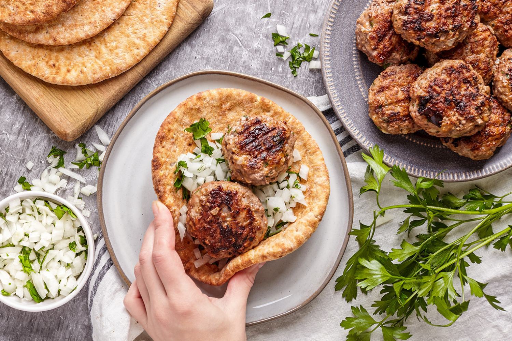

The losh kebab is a large burger made with fifty percent lamb, fifty percent beef. It is mixed with amazing herbs, spices, and chopped white onion. It’s an absolute flavor bomb. There is lots of fresh parsley and onion chopped up and mixed into the beef and lamb burgers. I also notice a slight tomatoey flavor which is from the tomato paste. For spices, the main note I taste is cumin, which is so delicious in grilled meat recipes.